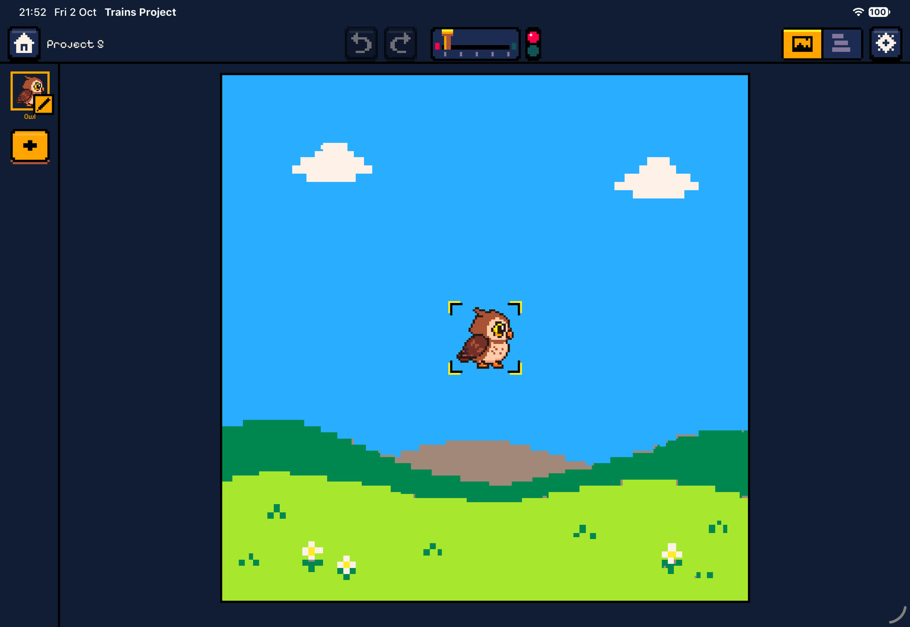
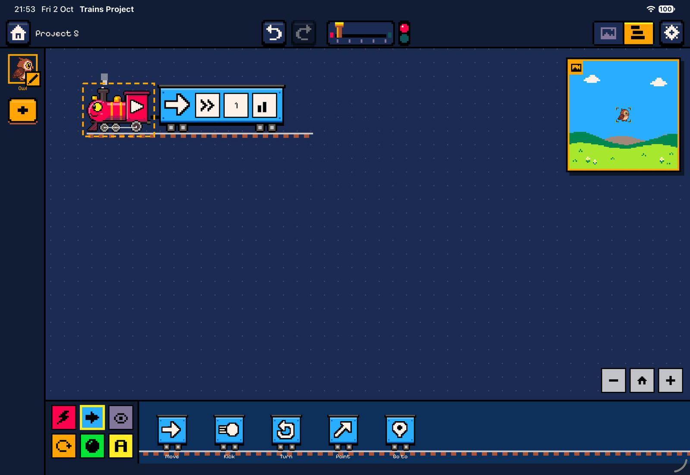

Guide
Getting started
This page walks through the app from the moment it opens: the home screen, projects, the workspace on iPad and Mac, and a first program built step by step.
The home screen
The app opens on a pixel-art evening scene: a violet-to-amber sky with stars and a crescent moon, teal hills and a little red locomotive steaming along a rail at the bottom. The first time after launch a short startup sequence plays. The letters of Trains Project drop in, the round red mascot puffs steam, and the menu cards rise into place. Tap anywhere to skip it. With Reduce Motion switched on, the backdrop and mascot stay still.

The START theme plays on the home screen. The cards are arranged in two sections:
- My projects starts with the New project card, followed by your saved projects, newest first. Each card shows a pixel thumbnail of the project’s stage.
- Samples are four ready-made projects: Bouncy ball, Banana chase, Pen spiral and Ping-pong. Opening a sample creates a fresh copy in My projects, so the original is never changed.
First launch. On the very first launch the four samples are also copied into My projects, so a new user has something to open straight away.
Managing projects
Long-press a project card on iPad, or right-click it on Mac, to open its menu:
- Rename gives the project a new name.
- Duplicate makes a copy called “name 2”.
- Delete removes the project after a confirmation. This can’t be undone.
A new project is named “Project n”. It contains one character, an owl standing in the middle of the stage, with one empty When ▶ is pressed train.
There is no Save button. Every change is written to disk about a second after you make it, and again right before every run.
The workspace
Opening a project shows the workspace. It has four parts: a slim toolbar along the top, the character dock down the left edge, the square stage, and the code editor with its wagon depot at the bottom.
The toolbar
| Control | What it does |
|---|---|
| Home | Back to the home screen. The project is already saved. |
| Project name | Tap to rename the project (not while running). |
| Undo / Redo | Step back and forward through edits, up to 100 steps. Every gesture is one step: a drop, a parameter change, moving a character. Disabled while a program runs. On Mac: ⌘Z and ⇧⌘Z. |
| Throttle | The brass lever starts and stops the program. Tap it, or drag the lever to the right to run and back to the left to stop. On Mac: ⌘R runs and ⌘. stops. |
| Signal lamp | Next to the throttle. Red means stopped and green means running. |
| Stage / Code switch | iPad swap mode only: shows the stage or the code full-screen. |
| Settings (gear) | Background, walls, gravity at start, music, sound effects and (on iPad) the layout. See Settings. |
The character dock
The left edge lists the project’s characters as costume chips.
- Tap a chip to select that character. The code editor always shows the selected character’s trains.
- Tap the selected chip again (it shows a pencil) to open the character inspector.
- Tap the brass + to add a new character from the costume grid.
iPad: swap mode
On iPad the stage and the code editor each take the full screen.
- Switch between them with the Stage / Code switch in the toolbar, or by swiping sideways. On the stage pane, swipe anywhere around the stage. On the code pane, swipe in the thin strips along the screen edges, so that drags on the code canvas are not mistaken for swipes.
- While coding, a live mini stage floats in a corner. Tap it to jump to the stage, or drag it to another corner. It never covers the wagon depot.
- Settings has a Side by side on wide screens switch for people who prefer the Mac layout on a large iPad.


Mac: side by side
On Mac the stage is on the left and the code is on the right, with a pixel rail between them. Drag the rail to resize. The stage can take from 25 % to 70 % of the window, and the app remembers the split. The keyboard doubles as the gamepad, see Controls.
Your first program
This builds a character that greets you, hops, and spins when tapped. The steps work the same on iPad and Mac.
- Create a project. On the home screen tap New project. You get an owl in the middle of the stage.
- Open the code. On iPad tap the Code half of the switch. The owl already has a red When ▶ is pressed locomotive parked on a rail.
- Add a speech bubble. In the depot at the bottom, pick the purple Looks tab and tap the Say wagon. Tapping a wagon couples it to the end of the selected train. You hear a “clack”.
- Change what it says. Tap the text plate on the Say wagon and type
Hi!. Every parameter has a sensible default, so you only change what you need. - Add a hop. Pick the orange Control tab and drag a Repeat wagon behind the Say wagon. When you lift it near the rail, a gap opens where it will land. Then drag a blue Move wagon (from Motion) into the repeat’s empty slot, and a Wait after it.
- Set the parameters. On Move, tap the direction plate and choose ↑ up. Add a second Move with direction ↓ down after the Wait. Now the owl hops three times.
- React to a tap. Pick the red Locomotives tab and tap When tapped. A new train appears below the first one. Couple a Turn wagon to it and set its degrees to 360.
- Run it. Push the throttle (or press ⌘R). The signal turns green, the GAME music starts, and each wagon lights up as it runs. Tap the owl on the stage to make it spin.
- Stop. Pull the throttle back. Everything returns to exactly where it was before the run.
The finished program


Tip. Tapping a locomotive or wagon also selects its train. Wagons you tap in the depot are added to the end of the selected train, or of the character’s last train when none is selected. If the character has no trains at all, a new When ▶ is pressed train is made for the wagon.
Running and stopping
While a program runs:
- The code is read-only. A small “Running” badge appears and the active wagons of the selected character glow. Select another character in the dock to watch their trains instead.
- The stage switches from design mode to live mode. Tapping a character now fires its When tapped trains instead of selecting it.
- If any train listens to gamepad buttons, an on-screen gamepad appears next to the stage: a d-pad and A/B buttons.
Stopping ends every train, removes all clones and restores the design exactly: positions, angles, sizes, variables, gravity, and the pen drawing. A run never changes your project. That is why you can always run again from the same starting point.
When a Win or Lose wagon runs, the world freezes and confetti (or a red flash) appears. A “You win!” or “Game over” card then offers Play again or Edit, and the WIN or FAIL jingle plays before the coding music returns.
Languages and accessibility
- The app is fully translated into English and Polish, following the device language. The pixel font includes Polish letters.
- No step requires reading. Every wagon is recognisable by its colour and icon, and parameters are shown as icons wherever one reads better than a word.
- Every control has a VoiceOver label. Reduce Motion stills the home backdrop and the mascot.
- Touch targets are at least 44 points, and iPad gives haptic feedback when you pick up, hover over and drop wagons.